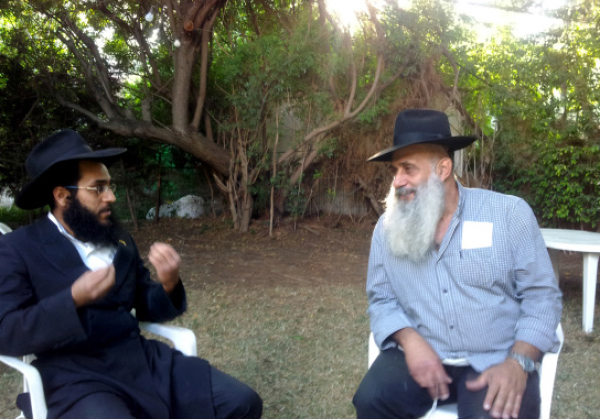

Like Son Like Father
A father and son talk about their spiritual journeys.

I met them together at the parents’ house. It wasn’t easy getting them to sit down together. It was only when I said, “I want to interview you, a father and son who were niskarev to the Rebbe MH”M,” that they agreed.
“I HELD THE SIDDUR UPSIDE DOWN”
The kiruv process began with the father, Yair. It was fifteen years ago and the Luziya family had started building a house in Tel Mond. In the meantime, during construction, they moved to Kfar Saba, where Yiftach went to school.
What connection did they have to Judaism?
“We were as far as east is from west,” said Yair. “Any connection was coincidental. We made Kiddush, but that was the only thing.”
Divine Providence guided them and they landed in a neighborhood with many religious Jews.
“That left us feeling different and strange. On Shabbos, they all went to shul and the atmosphere was definitely religious. In order not to feel out of place, I went to shul too. I would hold the Siddur upside down, on purpose. That was so someone would pay attention to me and come over, but it didn’t help. Nobody noticed.”
Yair tried this little game each Shabbos in a different shul. For some reason, he did not consider changing the script. Or maybe he figured, if they don’t notice me, that’s a sign that I’m not important and there is no reason for me to go to shul. He planned on visiting all ten shuls in the area. One by one, he was able to mark them off, so that afterward he would be able to sit at home and feel virtuous.
On the eighth Shabbos, he went to a Moroccan shul.
“Someone noticed me, came over, and began talking to me. I started attending t’fillos there.”
In the meantime, Yiftach, who was 14, saw his father going to shul.
“I thought it was weird. At first, I didn’t think it was significant, but then he slowly became more religious. I remember getting up one Chol HaMoed morning and getting ready to go to school and seeing my father coming back from shul, holding his tallis and t’fillin.
“My parents definitely did not teach me to disdain religion or religious people. After all, we grew up in the shadow of our Sephardic grandparents, a Syrian grandfather on my father’s side, who was in some way connected to tradition, and my mother’s father, from the Yemenite side, who regularly went to shul.” But like all the boys who prided themselves on “my grandfather was a rabbi,” he says, “Personally, I did not like going to shul. I did not understand a thing. I was bored there.”
GETTING INVOLVED IN MITZVOS, THANKS TO KARATE
Hashgacha intervened and Yiftach began going to shul. Was it in order to feel “big” like Abba? I asked, but Yiftach said:
“I was 15, after all. My relationship with my father wasn’t one of admiration, and that’s an understatement.”
So what motivated him to go to shul as a fun-loving adolescent?
“I felt that I had it good. I was very popular among my friends. My parents were financially well-established and whatever I wanted, I got. I began to compete in the Israeli national karate rankings and moved through the ranks and was very successful in a relatively short amount of time. I knew that I had friends whose parents struggled financially and whose lives weren’t all that great. I felt that, aside from thanking my parents, I also had to thank Someone else.”
Yes, I know it’s hard to believe that a 15 year old can think that way. So he explained.
“While my friends were sitting in front of the computer or playing soccer, I put all my energy into karate. By nature, a child always seeks out what he wants. He looks for what he is lacking, and doesn’t acknowledge what he has. My parents registered me for karate when I was eight. It gave me a mature attitude toward life, got me to focus on a goal, to strive for excellence, and even to look at children’s games and those involved with them, from an elevated perch.”
How did that get you to want to say thank you?
“The guys in my training class were mature. There were 25 year olds, combat veterans and even Special Forces guys. They, who had just started, often came over to me for me to teach them. Being in the presence of mettlesome warriors matured me a lot. Instead of feeling ‘on top of the world,’ I thought, ‘Wow, I need to say thank you for everything I have.’ I found myself imbued with the mindset of a mature young man, which I did not see among my younger friends.”
Yiftach began walking to shul every Shabbos. When the children gathered to say T’hillim, he would sit with them and say T’hillim. “I had no plans on becoming a baal t’shuva. It was just a small degree of interest and minimal connection to the Creator. I gradually began putting on t’fillin and to daven.”
R’ Yair, what did you think of your son’s religious interest at this point?
“It didn’t bother me. Usually, in a religious or traditional family, they are excited when a child has an aliya l’Torah, reads T’hillim out loud, or the like. But it didn’t mean anything to me. I can even say I was a bit annoyed. I was nervous that my wife would say that I pulled Yiftach toward mitzva observance.”
In the meantime, Yair’s interest in mitzva observance grew.
“A friend of mine invited me to attend the classes given by R’ Mutty Alon. I went and this really enabled me to progress in my knowledge and involvement in mitzvos.
“We had a neighbor who worked for Kol Yisroel. He heard that I was attending R’ Alon’s classes and he asked me to put a microphone next to him so I could broadcast his shiur on the radio. There were people who treated me with respect when they thought I was from the radio.”
That is how Yair became active in spreading Torah on the radio, even before he became a Chabadnik.
AN ENTIRE CLASS WALKED IN DURING SHMONEH ESREI
The connection with Chabad began in an amusing way. Although they lived near the Chabad house in Kfar Saba, they weren’t aware of its existence. At first they looked for “Judaism-Lite.”
“Maybe the Rebbe wanted us to connect to him in Tel Mond,” said Yair as he described his initial contact with Chabad. “On the first Shabbos after we returned to Tel Mond, we woke up late. We went to shul, where they were already finished. Someone saw us and said sarcastically, ‘All’s well, just go to Chabad. Over there, no matter when you show up, you’ll be on time.’”
They went, and loved it. The shliach R’ Amram Shatal looked on in astonishment at the 16 year old who davened with such intensity. He was mekarev the boy, who found a friend in the shliach’s son, Asaf (today a teacher in the Chabad yeshiva in Givat Olga).
Yiftach gradually began wearing tzitzis and davening three times a day, while continuing to attend high school in Kfar Saba and his strenuous karate workouts.
“If you saw me on the street, you would not know I was religious. I wore a visor cap, my tzitzis were underneath my clothing, and I would put t’fillin on before school.”
His father though, was furious; oh boy was he furious at Chabad. When he tries to explain it, now that he’s a Chabad Chassid, he is apologetic and soft-spoken. It’s hard to believe that he was really angry. His son decided to save him and me from the awkwardness of it all and told me why he was father was so upset, not only at the shliach but at Chabad in general.
“I was way out of line, I know, but what could I do?” began Yiftach.
His father began telling the “easier” part of the story.
“One day, we got a phone call from his school with a serious complaint. Our dear son was absent nearly the entire year because he went off to learn Gemara. When I dropped him off at school, he wouldn’t go inside for the first class, but went to the library to daven. They recommended that we take him for treatment and said that the school psychologist recommended this!”
Yiftach had a mischievous look on his face when he said, “I would go to the school library where it was quiet early in the morning, and I would daven. One morning, the library was closed and I went to the computer room where I thought it would be quiet. While I was in the middle of Shmoneh Esrei, a class came into the room. They sat down and were in shock at the sight of me. They had no idea how religious I had become. The teacher came over to me shouting, ‘Aren’t you ashamed? Don’t you see there’s a class going on here?’
“I closed my eyes and hid my face in my Siddur and continued swaying and praying.”
“Can you imagine how I felt when I heard this?” asked Yair. “Someone took my son from under my nose and destroyed him! We never had behavior problems with Yiftach. He was always a good boy.”
Yiftach shifted uncomfortably at this praise. “A good boy? Nu, I was definitely a lively kid, even a little mischievous, but for the most part I walked the straight and narrow.
“When my father came home, he yelled at me. ‘Do you want to ruin your life? What did you find among these Chabadnikim?’ I remember feeling that his shouting was coming along with a lot of pain and love. My parents’ concern could be heard in every word, but what could I do? I felt a deep attachment to the Rebbe. The stories about the Rebbe led me to see him as the epitome of truth in this world and I sought the truth. I wanted to be a Chassid of the Rebbe even though I did not understand a lot, but I did know that I wanted to be connected to the Rebbe.”
This kind of talk, which Yair himself says today about himself, infuriated him back then. He forbade his son from going to the Chabad house so they wouldn’t “brainwash” him. All of Yiftach’s explanations were rejected. Stunned by the recommendation that he send his son for psychological counseling, a recommendation that he considered eminently justified, Yair bounded into his car towards the Chabad house where he met Rabbi Shatal.
“This is what you teach my son?” he roared. “To disdain his studies at school? To oppose his parents’ education? To break their hearts?”
R’ Shatal invited Yair to sit down and explain what was disturbing him. He had seen the boy come with his father to shul and knew that the boy’s mitzva observance greatly pleased his father. He tried to reason with Yair, but Yair was not receptive.
Once he forbade Yiftach from going to the Chabad house, Yiftach began going with his father to the Sephardic shul, but he would find excuses to visit the Chabad house like “Oy, they don’t have a minyan. I’m going to do a mitzva and complete the minyan.”
“I was operating on an emotional high, which is common to fresh baalei t’shuva. These were deep emotions that were working their way through my insides. I would go to shul but would often skip class, go to the Chabad house or a nearby park and sit and learn Gemara. I even had a t’fillin stand in school that I would run during recess. I gradually became the Chabadnik of the school.”
The principal was adamantly opposed to religious activity within the school, but that didn’t help her. The students themselves asked Yiftach to help them put on t’fillin.
Here is the interesting epilogue to the t’fillin standoff. About a year ago, Yiftach was invited by the Chabad house of Kfar Saba to do a one-man show. When he finished his performance, he asked whether anybody in the audience attended that school. A boy raised his hand, and when he asked whether the principal still opposed putting on t’fillin in school, the boy said definitely not. In fact, the t’fillin stand has been promoted to a room designated for t’fillos where students can put on t’fillin and daven in peace.
THE EXPLOSION
If I thought that that was the extent of the strife between father and son, I was wrong. What happened next threatened to undermine the peace of the home, along with the entire kiruv process.
Yiftach was learning more and more about Judaism, and his being torn between school and his desire to be the Rebbe’s Chassid gave him no rest. One Shabbos, when his parents were abroad, Yiftach asked his friend Asaf Shatal, the shliach’s son, to lend him a hat and suit.
“I wanted to look and feel like a religious person,” Yiftach said with a smile. “This was the joy of my life. I was sick and tired of a life of compromise. I wanted to be in yeshiva and to serve Hashem with joy, without difficulties.
“Yes, I was naïve. I thought that if I switched to a yeshiva there would be no challenges. The truth is, that is when the challenges began.”
Although he was in the middle of eleventh grade, close to graduating, and even more importantly close to receiving his black belt in karate, his dream of a decade, he decided to drop it all and go to yeshiva.
What made you “commit suicide,” as far as the world you were coming from saw it?
“I thought: Moshiach will come and where will he find me – in school or yeshiva? It was clear to me that this was it; the Rebbe was coming and I wanted to be his soldier and to learn in his yeshiva.”
Yair sat quietly, letting his son continue his story. He knew what Yiftach was about to relate. His love for his son is too great to “replay” this part of the story, which nearly caused a rupture between them.
“One day, I told my parents that I wanted to spend Shabbos with a friend in Kfar Saba. Of course, they said fine. However, I went to the yeshiva in Tzfas and had a fantastic time. I met Asaf’s roommates, Shima’le Pizem, Meir Trager, and Moshe Abad. I wanted to be a Tamim like them. When I returned home and my parents asked me how Shabbos was, I said, ‘Fine, Boruch Hashem.’
“But two weeks later, when my father met the father of the friend with whom I had supposedly spent Shabbos, he discovered that I hadn’t been there.
Both Yair and Yiftach take a deep breath and Yiftach continued.
“My father hit the roof. ‘Tell me, that’s what they teach you there – to lie? To lie to your parents? Tell me, what are you doing? Do you want your mother to have a heart attack? Tell me, what are you lacking? Was there something you asked for that you did not get? We paid for a course at Wingate [Israel’s National Center for Physical Education and Sport], you were registered for karate classes and you are about to go compete abroad; you studied theater and even communications, what are you lacking? Why are you destroying your life, and with the religious folk no less?’
“I couldn’t respond, but my father wasn’t looking for an answer anyway and he went on. ‘Listen well. Today, we are going to have a serious talk with your mother and finally put an end to all this.’
“I did not know what to do. I knew I had done something that wasn’t right, but I also knew that what I wanted to do was a lot more than all right. I didn’t have the ability to explain it, and forget about convincing them. I prayed.
“The conversation with my mother was less confrontational, but a lot harder. She said she wanted me to graduate high school, complete the karate training, go to the army, and ‘Then you can do what you want, but don’t throw away everything you’ve put in, until now.’
“When I wasn’t convinced, my mother drew out her trump card. ‘If you finish your studies and go to the army, I’ll buy you a new jeep. I’ll take out loans, but you’ll get the jeep.’ That was every boy’s dream, but I responded quietly and seriously, ‘Ima, that life is false. I won’t live that way. I won’t be marrying someone from the secular world, and I want children who are Chabadnikim! You are trying to win me over with material things, but I’m telling you the truth. It doesn’t speak to me. I seek spirituality, holiness, Torah, the Rebbe. That is what I want.’
“My mother began to cry. That broke my heart, but I decided to remain firm; I would progress in my mitzva observance while always being joyous. I would constantly show them how happy I was with what I was doing. It later turned out that this decision was one of the reasons that got my father to become a Lubavitcher himself.”
When I asked Yair whether, indeed, this decision brought him to mitzva observance, he nodded and said, “The main thing that convinced me was seeing how serious and decisive Yiftach was about the path he had chosen. I could see he was genuine. It wasn’t only that his goal was to arrive at the truth, but even the path to get there was truthful, honest, and decisive.”
Yiftach took this opportunity to share his life experience for the benefit of those in similar circumstances.
“It is hard to be mekarev family. The truth is, I was not mekarev my father to Judaism or to the Rebbe. The Rebbe himself was mekarev him. Furthermore, most of his process of getting close to Chabad happened when I was on K’vutza and on shlichus to Sri Lanka. I wasn’t living at home during the time of his own personal journey and maybe it was better that way …
“But when I was at home, at a time when, considering the circumstances, there ought to have been lots of tension and explosion between myself and my parents, I constantly reminded myself: Yiftach, your parents did not change; they remained the same. You are the one who changed from the way you were raised. It is not your job to change your parents or the home but to show how you are adjusting to the situation and not how you are changing the situation to meet your needs.”
The shared insights of father and son, who together navigated successfully the many potential pitfalls on life’s twisted roads, serve as the basis for harmonious family life with the mother/wife not having changed, and his sisters also remaining as they were before.
“On the other hand,” said Yiftach with a smile. “My mother and sisters went to India and the other people on the trip told them, ‘Let’s go to Bayit HaYehudi [an outreach program in India],’ but they said, ‘Why Bayit HaYehudi? Forget about superficial packaging. A real Shabbos is done in a real place – at a Chabad house!’”
A NEW PATH
Yair’s continued involvement with Chabad was slow but steady. It began with a visit to the yeshiva in Tzfas, “in order to see where my son is, where he sleeps, and who his friends are.” He remembers that visit very well:
“I went into the rosh yeshiva R’ Wilschansky’s office without any show of respect, and I began criticizing the situation in the dormitory and the dining room. R’ Wilschansky, in his great wisdom, let me talk and let it all out. He empathized with me and said, ‘I consider Yiftach like my own son. I understand you perfectly. I care about him tremendously, as well as the hundreds of other students here. I care about both the material and the spiritual situation, and we are doing all we can so they will be satisfied and happy, both materially and spiritually. As far as I know, Yiftach is very happy here.’”
Yiftach picks up the narrative, “This led the way to inviting my father to pay a visit not just for the purpose of criticizing but to actually get a feel for the place, and he ended up coming to spend Shabbos with me in yeshiva.”
The time they spent together did them both good. Their relationship, which was tense, became much more stable and loving than the period before Yiftach ever got involved.
Later on, when Yiftach went on K’vutza, his father missed him and went to see him. He greatly enjoyed his visit to 770. When he returned to Eretz Yisroel, even though he still did not look like a Chassid, it was clear to him that he was a Chassid of the Rebbe. With his wife’s consent, the kitchen was koshered. When the happy parents led their son to the chuppa, Yair was wearing a hat and suit and had a beard.
Since then? “Working on middos and working on deserving to be called a Chassid of the Rebbe are daily tasks,” say both of them, in nearly the same words.
Mmarad. "Like Son Like Father." Beis Moshiach, no. 897 (October 8, 2013).